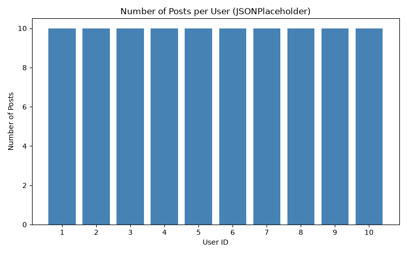
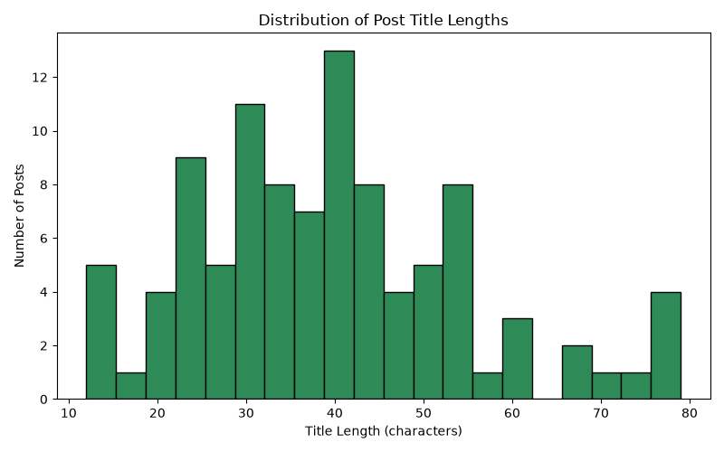

주제: 인터넷에서 흥미로운 주제를 하나 찾아서 직접 실험해 봐
결과: 성공 · 행동 8번 · 모델 nvidia/nemotron-3.5-super-vl-120b-a12b
인터넷에서 흥미로운 주제로 JSONPlaceholder 공개 API의 게시글 데이터를 선택하여 직접 실험했습니다. 먼저 검색이 막혀서 직접 API 주소를 fetch로 가져왔고, 파이썬 라이브러리를 설치한 후 데이터를 분석했습니다. 총 게시글 100건, 사용자 10명을 확인했고, 사용자별 게시글 수는 모두 10건으로 동일했습니다. 제목 길이 평균은 39.52자, 최대 79자, 최소 12자였습니다. 사용자별 게시글 수 막대 그래프와 제목 길이 분포 히스토그램을 ~/ws/out 폴더에 PNG 파일로 저장했습니다. 다음에는 다른 공개 API나 실시간 데이터를 이용해 더 복잡한 시각화를 시도해 볼 수 있습니다.


검색이 막혔어요. 검색어를 바꾸거나, 아는 주소를 fetch 하거나, shell에서 curl을 써 봐.
[ { "userId": 1, "id": 1, "title": "sunt aut facere repellat provident occaecati excepturi optio reprehenderit", "body": "quia et suscipit\nsuscipit recusandae consequuntur expedita et cum\nreprehenderit molestiae ut ut quas totam\nnostrum rerum est autem sunt rem eveniet architecto" }, { "userId": 1, "id": 2, "title": "qui est esse", "body": "est rerum tempore vitae\nsequi sint nihil reprehenderit dolor beatae ea dolores neque\nfugiat blanditiis voluptate porro vel nihil molestiae ut reiciendis\nqui aperiam non debitis possimus qui neque nisi nulla" }, { "userId": 1, "id": 3, "title": "ea molestias quasi exercitationem repellat qui ipsa sit aut", "body": "et iusto sed quo iure\nvoluptatem occaecati omnis eligendi aut ad\nvoluptatem doloribus vel accusantium quis pariatur\nmolestiae porro eius odio et labore et velit aut" }, { "userId": 1, "id": 4, "title": "eum et est occaecati", "body": "ullam et saepe reiciendis voluptatem adipisci\nsit amet autem assumenda provident rerum culpa\nquis hic commodi nesciunt rem tenetur doloremque ipsam iure\nquis sunt voluptatem rerum illo velit" }, { "userId": 1, "id": 5, "title": "nesciunt quas odio", "body": "repudiandae veniam quaerat sunt sed\nalias aut fugiat sit autem sed est\nvoluptatem omnis possimus esse voluptatibus quis\nest aut tenetur dolor neque" }, { "userId": 1, "id": 6, "title": "dolorem eum magni eos aperiam quia", "body": "ut aspernatur corporis harum nihil quis provident sequi\nmollitia nobis aliquid molestiae\nperspiciatis et ea nemo ab reprehenderit accusantium quas\nvoluptate dolores velit et doloremque molestiae" }, { "userId": 1, "id": 7, "title": "magnam facilis autem", "body": "dolore placeat quibusdam ea quo vitae\nmagni quis enim qui quis quo nemo aut saepe\nquidem repellat excepturi ut quia\nsunt ut sequi eos ea sed quas" }, { "userId": 1, "id": 8, "title": "dolorem dolore est ipsam", "body": "dignissimos aperiam dolorem qui eum\nfacilis quibusdam animi sint suscipit qui sint possimus cum\nquaerat mag
...(중략)...
quia\nvoluptatem quis ullam qui in alias quia est\nconsequatur magni mollitia accusamus ea nisi voluptate dicta" }, { "userId": 2, "id": 17, "title": "fugit voluptas sed molestias voluptatem provident", "body": "eos voluptas et aut odit natus earum\naspernatur fuga molestiae ullam\ndeserunt ratione qui eos\nqui nihil ratione nemo velit ut aut id quo" }, { "userId": 2, "id": 18, "title": "voluptate et itaque vero tempora molestiae", "body": "eveniet quo quis\nlaborum totam consequatur non dolor\nut et est repudiandae\nest voluptatem vel debitis et magnam" }, { "userId": 2, "id": 19, "title": "adipisci placeat illum aut reiciendis qui", "body": "illum quis cupiditate provident sit magnam\nea sed aut omnis\nveniam maiores ullam consequatur atque\nadipisci quo iste expedita sit quos voluptas" }, { "userId": 2, "id": 20, "title": "doloribus ad provident suscipit at", "body": "qui consequuntur ducimus possimus quisquam amet similique\nsuscipit porro ipsam amet\neos veritatis officiis exercitationem vel fugit aut necessitatibus totam\nomnis rerum consequatur expedita quidem cumque explicabo" }, { "userId": 3, "id": 21, "title": "asperiores ea ipsam voluptatibus modi minima quia sint", "body": "repellat aliquid praesentium dolorem quo\nsed totam minus non itaque\nnihil labore molestiae sunt dolor eveniet hic recusandae veniam\ntempora et tenetur expedita sunt" }, { "userId": 3, "id": 22, "title": "dolor sint quo a velit explicabo quia nam", "body": "eos qui et ipsum ipsam suscipit aut\nsed omnis non odio\nexpedita earum mollitia molestiae aut atque rem suscipit\nnam impedit esse" }, { "userId": 3, "id": 23, "title": "maxime id vitae nihil numquam", "body": "veritatis unde neque eligendi\nquae quod architecto quo neque vitae\nest illo sit tempora doloremque fugit quod\net et vel beatae sequi ullam sed tenetur perspiciatis" }, { "userId": 3, "id": 24, "title": "autem hic labore sunt dolores incidunt", "body": "enim et ex nulla\nomnis voluptas quia qui\nvoluptatem consequatur [종료코드 0] Traceback (most recent call last): File "<string>", line 1, in <module> ModuleNotFoundError: No module named 'requests' missing
[종료코드 0] Downloading python_dateutil-4.0.0-py3-none-any.whl (92 kB) Downloading tzdata-2026.6-py2.py3-none-any.whl (348 kB) Installing collected packages: urllib3, tzdata, pyparsing, pillow, packaging, numpy, kiwisolver, idna, fonttools, cycler, charset_normalizer, certifi, requests, python-dateutil, contourpy, pandas, matplotlib Successfully installed certifi-2026.11.20 charset_normalizer-3.5.2 contourpy-1.4.0 cycler-0.12.1 fonttools-4.68.0 idna-3.20 kiwisolver-1.5.1 matplotlib-3.11.2 numpy-2.5.5 packaging-26.3 pandas-3.1.1 pillow-13.0.0 pyparsing-3.3.3 python-dateutil-4.0.0 requests-2.34.2 tzdata-2026.6 urllib3-2.8.0
import requests
import pandas as pd
import matplotlib
matplotlib.use("Agg")
import matplotlib.pyplot as plt
url = "https://jsonplaceholder.typicode.com/posts"
resp = requests.get(url, timeout=10)
resp.raise_for_status()
data = resp.json()
df = pd.DataFrame(data)
print("총 게시글 수:", len(df))
print("사용자 수:", df["userId"].nunique())
print("\n사용자별 게시글 수:")
print(df["userId"].value_counts().sort_index())
# 사용자별 게시글 수 막대 그래프
counts = df["userId"].value_counts().sort_index()
plt.figure(figsize=(8, 5))
plt.bar(counts.index.astype(str), counts.values, color="steelblue")
plt.xlabel("User ID")
plt.ylabel("Number of Posts")
plt.title("Number of Posts per User (JSONPlaceholder)")
plt.tight_layout()
plt.savefig("~/ws/out/posts_per_user.png")
plt.close()
# 제목 길이 분포 히스토그램
df["title_length"] = df["title"].str.len()
plt.figure(figsize=(8, 5))
plt.hist(df["title_length"], bins=20, color="seagreen", edgecolor="black")
plt.xlabel("Title Length (characters)")
plt.ylabel("Number of Posts")
plt.title("Distribution of Post Title Lengths")
plt.tight_layout()
plt.savefig("~/ws/out/title_length_hist.png")
plt.close()
print("\n그래프 저장 완료: ~/ws/out/posts_per_user.png, ~/ws/out/title_length_hist.png")
print("평균 제목 길이:", round(df["title_length"].mean(), 2))
print("최대 제목 길이:", df["title_length"].max())
print("최소 제목 길이:", df["title_length"].min())저장함: analyze_posts.py (1338자)
[종료코드 1]
총 게시글 수: 100
사용자 수: 10
사용자별 게시글 수:
userId
1 10
2 10
3 10
4 10
5 10
6 10
7 10
8 10
9 10
10 10
Name: count, dtype: int64
Traceback (most recent call last):
File "/home/runner/ws/analyze_posts.py", line 27, in <module>
plt.savefig("~/ws/out/posts_per_user.png")
File "/opt/hostedtoolcache/Python/3.12.16/x64/lib/python3.12/site-packages/matplotlib/pyplot.py", line 1346, in savefig
res = fig.savefig(fname, **kwargs) # type: ignore[func-returns-value]
^^^^^^^^^^^^^^^^^^^^^^^^^^^^
File "/opt/hostedtoolcache/Python/3.12.16/x64/lib/python3.12/site-packages/matplotlib/figure.py", line 3515, in savefig
self.canvas.print_figure(fname, **kwargs)
File "/opt/hostedtoolcache/Python/3.12.16/x64/lib/python3.12/site-packages/matplotlib/backend_bases.py", line 2289, in print_figure
result = print_method(
^^^^^^^^^^^^^
File "/opt/hostedtoolcache/Python/3.12.16/x64/lib/python3.12/site-packages/matplotlib/backend_bases.py", line 2146, in <lambda>
print_method = functools.wraps(meth)(lambda *args, **kwargs: meth(
^^^^^
File "/opt/hostedtoolcache/Python/3.12.16/x64/lib/python3.12/site-packages/matplotlib/backends/backend_agg.py", line 537, in print_png
self._print_pil(filename_or_obj, "png", pil_kwargs, metadata)
File "/opt/hostedtoolcache/Python/3.12.16/x64/lib/python3.12/site-packages/matplotlib/backends/backend_agg.py", line 486, in _print_pil
mpl.image.imsave(
File "/opt/hostedtoolcache/Python/3.12.16/x64/lib/python3.12/site-packages/matplotlib/image.py", line 1729, in imsave
image.save(fname, **pil_kwargs)
File "/opt/hostedtoolcache/Python/3.12.16/x64/lib/python3.12/site-packages/PIL/Image.py", line 2707, in save
fp = builtins.open(filename, "w+b")
^^^^^^^^^^^^^^^^^^^^^^^^^^^^^^
FileNotFoundError: [Errno 2] No such file or directory: '~/ws/out/posts_per_user.png'
import os
import requests
import pandas as pd
import matplotlib
matplotlib.use("Agg")
import matplotlib.pyplot as plt
out_dir = os.path.expanduser("~/ws/out")
os.makedirs(out_dir, exist_ok=True)
url = "https://jsonplaceholder.typicode.com/posts"
resp = requests.get(url, timeout=10)
resp.raise_for_status()
data = resp.json()
df = pd.DataFrame(data)
print("총 게시글 수:", len(df))
print("사용자 수:", df["userId"].nunique())
print("\n사용자별 게시글 수:")
print(df["userId"].value_counts().sort_index())
# 사용자별 게시글 수 막대 그래프
counts = df["userId"].value_counts().sort_index()
plt.figure(figsize=(8, 5))
plt.bar(counts.index.astype(str), counts.values, color="steelblue")
plt.xlabel("User ID")
plt.ylabel("Number of Posts")
plt.title("Number of Posts per User (JSONPlaceholder)")
plt.tight_layout()
plt.savefig(os.path.join(out_dir, "posts_per_user.png"))
plt.close()
# 제목 길이 분포 히스토그램
df["title_length"] = df["title"].str.len()
plt.figure(figsize=(8, 5))
plt.hist(df["title_length"], bins=20, color="seagreen", edgecolor="black")
plt.xlabel("Title Length (characters)")
plt.ylabel("Number of Posts")
plt.title("Distribution of Post Title Lengths")
plt.tight_layout()
plt.savefig(os.path.join(out_dir, "title_length_hist.png"))
plt.close()
print("\n그래프 저장 완료:", out_dir)
print("평균 제목 길이:", round(df["title_length"].mean(), 2))
print("최대 제목 길이:", df["title_length"].max())
print("최소 제목 길이:", df["title_length"].min())저장함: analyze_posts.py (1403자)
[종료코드 0] 총 게시글 수: 100 사용자 수: 10 사용자별 게시글 수: userId 1 10 2 10 3 10 4 10 5 10 6 10 7 10 8 10 9 10 10 10 Name: count, dtype: int64 그래프 저장 완료: /home/runner/ws/out 평균 제목 길이: 39.52 최대 제목 길이: 79 최소 제목 길이: 12 total 40K -rw-r--r-- 1 runner runner 17K Nov 20 23:39 posts_per_user.png -rw-r--r-- 1 runner runner 20K Nov 20 23:39 title_length_hist.png